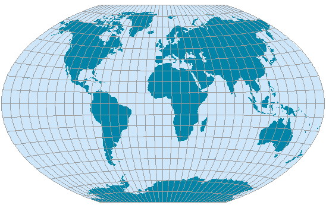

Winkel Tripel
Usage

Usage:*
Winkel Tripel is a modified
azimuthal projection. This projection is an arithmetic mean between two
older projections; the Aitoff projection and an equi-rectangular projection
(the mean applies to both x- and y-coordinates). This projection is neither
equal-area nor conformal.
*Usage information source:
Snyder, John P. (1993) Flattening the Earth:
Two Thousand Years of Map Projections. Chicago:
The University of Chicago Press.
Back to DSS Main Page